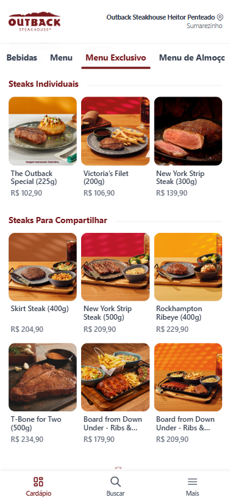
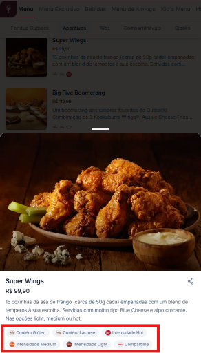
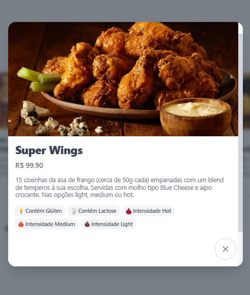
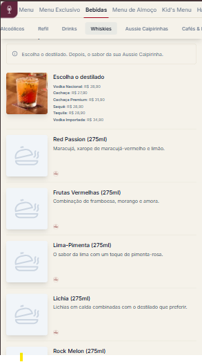
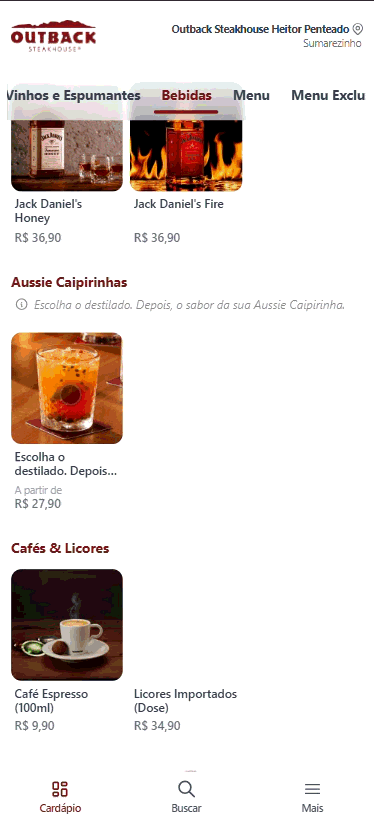
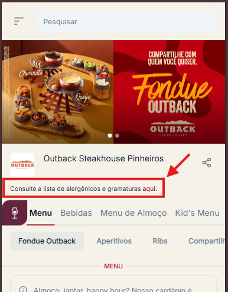
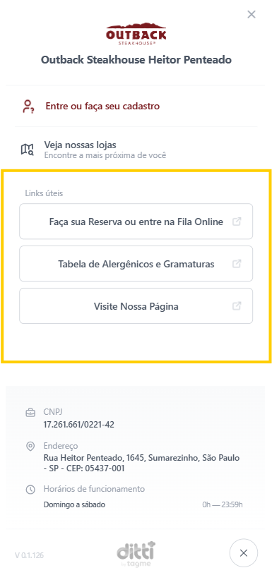

Mais visibilidade
Banners, blocos e destaques criam pontos de atenção ao longo da jornada.
Menu antigo x novo menu
O novo menu reposiciona campanhas, categorias, informações nutricionais e conteúdos institucionais em uma jornada mais simples para o cliente e mais ágil para a operação.
Resumo executivo
Banners, blocos e destaques criam pontos de atenção ao longo da jornada.
Categorias, cards maiores e hierarquia visual reduzem esforço de navegação.
Alergênicos, gramaturas e links úteis ganham áreas dedicadas e mais fáceis de localizar.
Replicações em tempo real entre clusters simplificam o dia a dia da operação.
01 | Campanhas
Antes, as campanhas ficavam concentradas na contracapa, com menor presença ao longo do fluxo de compra. Agora, ocupam posições estratégicas na home e em banners dinâmicos.

02 | Navegabilidade
O menu deixa de depender de uma rolagem contínua e passa a organizar o cardápio por categorias, com leitura mais intuitiva e compatível com o comportamento mobile.

03 | Visual aspiracional
O novo layout valoriza os itens, cria mais desejo visual e direciona a atenção do cliente para produtos estratégicos.

04 | Nutricionais e alergênicos


05 | Complementos
Complementos antes separados em outras etapas passam a aparecer vinculados ao prato ou bebida, tornando a montagem mais direta.


06 | Tabelas informativas
As tabelas deixam de ficar no início do cardápio e passam a contar com acesso próprio, aumentando clareza e acessibilidade.

07 | Links úteis
Uma aba exclusiva reúne informações como texto legal, reservas, redes sociais e sites oficiais, reduzindo dispersão e facilitando o acesso.

08 | Clonagens e atualizações
No modelo anterior, clonagens e atualizações dependiam de execução manual e muitas vezes de janelas específicas. O novo formato replica alterações entre clusters em tempo real.